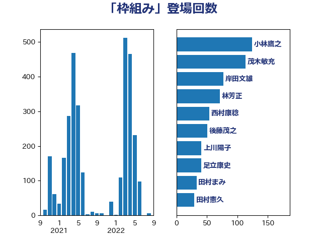

単語「枠組み」

| 小林鷹之 | 自由民主党 | 124 回 |
| 茂木敏充 | 自由民主党 | 113 回 |
| 岸田文雄 | 自由民主党 | 77 回 |
| 林芳正 | 自由民主党 | 71 回 |
| 西村康稔 | 自由民主党 | 54 回 |
| 後藤茂之 | 自由民主党 | 51 回 |
| 上川陽子 | 自由民主党 | 41 回 |
| 足立康史 | 日本維新の会 | 41 回 |
| 田村まみ | 国民民主党 | 33 回 |
| 田村憲久 | 自由民主党 | 29 回 |
| 山口壯 | 自由民主党 | 28 回 |
| 末松信介 | 自由民主党 | 27 回 |
| 萩生田光一 | 自由民主党 | 26 回 |
| 山下芳生 | 日本共産党 | 23 回 |
| 小泉進次郎 | 自由民主党 | 21 回 |
| 川合孝典 | 国民民主党 | 20 回 |
| 大塚耕平 | 国民民主党 | 19 回 |
| 鈴木俊一 | 自由民主党 | 19 回 |
| 麻生太郎 | 自由民主党 | 19 回 |
| 斉藤鉄夫 | 公明党 | 18 回 |
| 若宮健嗣 | 自由民主党 | 17 回 |
| 音喜多駿 | 日本維新の会 | 17 回 |
| 山岡達丸 | 立憲民主党 | 15 回 |
| 岸信夫 | 自由民主党 | 15 回 |
| 笠井亮 | 日本共産党 | 15 回 |
| 金子恭之 | 自由民主党 | 15 回 |
| 高橋光男 | 公明党 | 15 回 |
| 川田龍平 | 立憲民主党 | 14 回 |
| 武田良太 | 自由民主党 | 14 回 |
| 青柳仁士 | 日本維新の会 | 14 回 |
| 柳ヶ瀬裕文 | 日本維新の会 | 13 回 |
| 菅義偉 | 自由民主党 | 13 回 |
| 井上信治 | 自由民主党 | 12 回 |
| 野上浩太郎 | 自由民主党 | 12 回 |
| 上田清司 | 国民民主党 | 11 回 |
| 新藤義孝 | 自由民主党 | 11 回 |
| 梶山弘志 | 自由民主党 | 11 回 |
| 矢倉克夫 | 公明党 | 11 回 |
| 宮本徹 | 日本共産党 | 10 回 |
| 山崎誠 | 立憲民主党 | 10 回 |
| 山本博司 | 公明党 | 10 回 |
| 柴田巧 | 日本維新の会 | 10 回 |
| 田村貴昭 | 日本共産党 | 10 回 |
| 緑川貴士 | 立憲民主党 | 10 回 |
| 藤田文武 | 日本維新の会 | 10 回 |
| 中川正春 | 立憲民主党 | 9 回 |
| 和田政宗 | 自由民主党 | 9 回 |
| 塩川鉄也 | 日本共産党 | 9 回 |
| 梅村聡 | 日本維新の会 | 9 回 |
| 笹川博義 | 自由民主党 | 9 回 |
| 赤羽一嘉 | 公明党 | 9 回 |
| 佐藤茂樹 | 公明党 | 8 回 |
| 勝部賢志 | 立憲民主党 | 8 回 |
| 安江伸夫 | 公明党 | 8 回 |
| 宮崎雅夫 | 自由民主党 | 8 回 |
| 小熊慎司 | 立憲民主党 | 8 回 |
| 玉木雄一郎 | 国民民主党 | 8 回 |
| 穀田恵二 | 日本共産党 | 8 回 |
| 赤嶺政賢 | 日本共産党 | 8 回 |
| 金村龍那 | 日本維新の会 | 8 回 |
| 加藤勝信 | 自由民主党 | 7 回 |
| 古川禎久 | 自由民主党 | 7 回 |
| 和田有一朗 | 日本維新の会 | 7 回 |
| 坂本哲志 | 自由民主党 | 7 回 |
| 河野義博 | 公明党 | 7 回 |
| 浅田均 | 日本維新の会 | 7 回 |
| 田村智子 | 日本共産党 | 7 回 |
| 石井苗子 | 日本維新の会 | 7 回 |
| 青木愛 | 立憲民主党 | 7 回 |
| 伊佐進一 | 公明党 | 6 回 |
| 岡田克也 | 立憲民主党 | 6 回 |
| 平木大作 | 公明党 | 6 回 |
| 本田太郎 | 自由民主党 | 6 回 |
| 牧山ひろえ | 立憲民主党 | 6 回 |
| 猪口邦子 | 自由民主党 | 6 回 |
| 芳賀道也 | 国民民主党 | 6 回 |
| 谷合正明 | 公明党 | 6 回 |
| 野田佳彦 | 立憲民主党 | 6 回 |
| あべ俊子 | 自由民主党 | 5 回 |
| 塩田博昭 | 公明党 | 5 回 |
| 寺田学 | 立憲民主党 | 5 回 |
| 小田原潔 | 自由民主党 | 5 回 |
| 小西洋之 | 立憲民主党 | 5 回 |
| 山際大志郎 | 自由民主党 | 5 回 |
| 徳永エリ | 立憲民主党 | 5 回 |
| 礒崎哲史 | 国民民主党 | 5 回 |
| 緒方林太郎 | 無所属 | 5 回 |
| 舟山康江 | 国民民主党 | 5 回 |
| 西銘恒三郎 | 自由民主党 | 5 回 |
| 近藤和也 | 立憲民主党 | 5 回 |
| 野間健 | 立憲民主党 | 5 回 |
| 世耕弘成 | 自由民主党 | 4 回 |
| 中西祐介 | 自由民主党 | 4 回 |
| 井上哲士 | 日本共産党 | 4 回 |
| 伊藤孝恵 | 国民民主党 | 4 回 |
| 伊藤孝江 | 公明党 | 4 回 |
| 務台俊介 | 自由民主党 | 4 回 |
| 吉田とも代 | 日本維新の会 | 4 回 |
| 吉田宣弘 | 公明党 | 4 回 |
| 大島敦 | 立憲民主党 | 4 回 |
| 小倉將信 | 自由民主党 | 4 回 |
| 小宮山泰子 | 立憲民主党 | 4 回 |
| 小池晃 | 日本共産党 | 4 回 |
| 尾身朝子 | 自由民主党 | 4 回 |
| 山口那津男 | 公明党 | 4 回 |
| 山崎正恭 | 公明党 | 4 回 |
| 山本香苗 | 公明党 | 4 回 |
| 岩渕友 | 日本共産党 | 4 回 |
| 平井卓也 | 自由民主党 | 4 回 |
| 平将明 | 自由民主党 | 4 回 |
| 掘井健智 | 日本維新の会 | 4 回 |
| 本田顕子 | 自由民主党 | 4 回 |
| 松野博一 | 自由民主党 | 4 回 |
| 森田俊和 | 立憲民主党 | 4 回 |
| 江島潔 | 自由民主党 | 4 回 |
| 浅野哲 | 国民民主党 | 4 回 |
| 海江田万里 | 立憲民主党 | 4 回 |
| 石井正弘 | 自由民主党 | 4 回 |
| 神津たけし | 立憲民主党 | 4 回 |
| 福山哲郎 | 立憲民主党 | 4 回 |
| 美延映夫 | 日本維新の会 | 4 回 |
| 菊田真紀子 | 立憲民主党 | 4 回 |
| 藤巻健太 | 日本維新の会 | 4 回 |
| 西岡秀子 | 国民民主党 | 4 回 |
| 西村智奈美 | 立憲民主党 | 4 回 |
| 角田秀穂 | 公明党 | 4 回 |
| 遠藤良太 | 日本維新の会 | 4 回 |
| 重徳和彦 | 立憲民主党 | 4 回 |
| 鈴木敦 | 国民民主党 | 4 回 |
| 三浦信祐 | 公明党 | 3 回 |
| 中川康洋 | 公明党 | 3 回 |
| 中根一幸 | 自由民主党 | 3 回 |
| 中西健治 | 自由民主党 | 3 回 |
| 伊藤俊輔 | 立憲民主党 | 3 回 |
| 伊藤渉 | 公明党 | 3 回 |
| 倉林明子 | 日本共産党 | 3 回 |
| 北村経夫 | 自由民主党 | 3 回 |
| 吉良州司 | 無所属 | 3 回 |
| 大串博志 | 立憲民主党 | 3 回 |
| 大野敬太郎 | 自由民主党 | 3 回 |
| 宮崎政久 | 自由民主党 | 3 回 |
| 小野田紀美 | 自由民主党 | 3 回 |
| 山岸一生 | 立憲民主党 | 3 回 |
| 山田太郎 | 自由民主党 | 3 回 |
| 岩本剛人 | 自由民主党 | 3 回 |
| 東徹 | 日本維新の会 | 3 回 |
| 枝野幸男 | 立憲民主党 | 3 回 |
| 森山浩行 | 立憲民主党 | 3 回 |
| 横沢高徳 | 立憲民主党 | 3 回 |
| 河野太郎 | 自由民主党 | 3 回 |
| 泉健太 | 立憲民主党 | 3 回 |
| 津島淳 | 自由民主党 | 3 回 |
| 熊野正士 | 公明党 | 3 回 |
| 牧島かれん | 自由民主党 | 3 回 |
| 玄葉光一郎 | 立憲民主党 | 3 回 |
| 田名部匡代 | 立憲民主党 | 3 回 |
| 田島麻衣子 | 立憲民主党 | 3 回 |
| 石川博崇 | 公明党 | 3 回 |
| 石川大我 | 立憲民主党 | 3 回 |
| 稲田朋美 | 自由民主党 | 3 回 |
| 竹内譲 | 公明党 | 3 回 |
| 紙智子 | 日本共産党 | 3 回 |
| 自見はなこ | 自由民主党 | 3 回 |
| 金子恵美 | 立憲民主党 | 3 回 |
| 鈴木貴子 | 自由民主党 | 3 回 |
| 長友慎治 | 国民民主党 | 3 回 |
| 長峯誠 | 自由民主党 | 3 回 |
| 高木かおり | 日本維新の会 | 3 回 |
| こやり隆史 | 自由民主党 | 2 回 |
| たがや亮 | れいわ新選組 | 2 回 |
| 上杉謙太郎 | 自由民主党 | 2 回 |
| 中山展宏 | 自由民主党 | 2 回 |
| 中島克仁 | 立憲民主党 | 2 回 |
| 中曽根康隆 | 自由民主党 | 2 回 |
| 中谷真一 | 自由民主党 | 2 回 |
| 井坂信彦 | 立憲民主党 | 2 回 |
| 伊波洋一 | 無所属 | 2 回 |
| 佐藤啓 | 自由民主党 | 2 回 |
| 佐藤英道 | 公明党 | 2 回 |
| 前原誠司 | 国民民主党 | 2 回 |
| 吉川沙織 | 立憲民主党 | 2 回 |
| 吉田豊史 | 日本維新の会 | 2 回 |
| 土田慎 | 自由民主党 | 2 回 |
| 大西健介 | 立憲民主党 | 2 回 |
| 太田房江 | 自由民主党 | 2 回 |
| 奥野総一郎 | 立憲民主党 | 2 回 |
| 守島正 | 日本維新の会 | 2 回 |
| 宗清皇一 | 自由民主党 | 2 回 |
| 小沼巧 | 立憲民主党 | 2 回 |
| 小野寺五典 | 自由民主党 | 2 回 |
| 小野泰輔 | 日本維新の会 | 2 回 |
| 山添拓 | 日本共産党 | 2 回 |
| 山田宏 | 自由民主党 | 2 回 |
| 山田賢司 | 自由民主党 | 2 回 |
| 山谷えり子 | 自由民主党 | 2 回 |
| 岩谷良平 | 日本維新の会 | 2 回 |
| 岸真紀子 | 立憲民主党 | 2 回 |
| 平沢勝栄 | 自由民主党 | 2 回 |
| 庄子賢一 | 公明党 | 2 回 |
| 徳永久志 | 立憲民主党 | 2 回 |
| 打越さく良 | 立憲民主党 | 2 回 |
| 朝日健太郎 | 自由民主党 | 2 回 |
| 森まさこ | 自由民主党 | 2 回 |
| 森本真治 | 立憲民主党 | 2 回 |
| 櫛渕万里 | れいわ新選組 | 2 回 |
| 櫻井周 | 立憲民主党 | 2 回 |
| 武見敬三 | 自由民主党 | 2 回 |
| 浜口誠 | 国民民主党 | 2 回 |
| 浜野喜史 | 国民民主党 | 2 回 |
| 浦野靖人 | 日本維新の会 | 2 回 |
| 清水貴之 | 日本維新の会 | 2 回 |
| 渡辺創 | 立憲民主党 | 2 回 |
| 滝波宏文 | 自由民主党 | 2 回 |
| 漆間譲司 | 日本維新の会 | 2 回 |
| 片山さつき | 自由民主党 | 2 回 |
| 田中健 | 国民民主党 | 2 回 |
| 白石洋一 | 立憲民主党 | 2 回 |
| 石川香織 | 立憲民主党 | 2 回 |
| 磯崎仁彦 | 自由民主党 | 2 回 |
| 福島伸享 | 無所属 | 2 回 |
| 福田達夫 | 自由民主党 | 2 回 |
| 稲富修二 | 立憲民主党 | 2 回 |
| 羽田次郎 | 立憲民主党 | 2 回 |
| 藤岡隆雄 | 立憲民主党 | 2 回 |
| 辻清人 | 自由民主党 | 2 回 |
| 里見隆治 | 公明党 | 2 回 |
| 野田聖子 | 自由民主党 | 2 回 |
| 鈴木隼人 | 自由民主党 | 2 回 |
| 長坂康正 | 自由民主党 | 2 回 |
| 長妻昭 | 立憲民主党 | 2 回 |
| 長浜博行 | 無所属 | 2 回 |
| 阿達雅志 | 自由民主党 | 2 回 |
| 高木啓 | 自由民主党 | 2 回 |
| 高木宏壽 | 自由民主党 | 2 回 |
| 黄川田仁志 | 自由民主党 | 2 回 |
| ながえ孝子 | 無所属 | 1 回 |
| 三宅伸吾 | 自由民主党 | 1 回 |
| 三木亨 | 自由民主党 | 1 回 |
| 三木圭恵 | 日本維新の会 | 1 回 |
| 上月良祐 | 自由民主党 | 1 回 |
| 上野通子 | 自由民主党 | 1 回 |
| 中司宏 | 日本維新の会 | 1 回 |
| 中川宏昌 | 公明党 | 1 回 |
| 中谷一馬 | 立憲民主党 | 1 回 |
| 中野洋昌 | 公明党 | 1 回 |
| 串田誠一 | 日本維新の会 | 1 回 |
| 井上英孝 | 日本維新の会 | 1 回 |
| 仁木博文 | 無所属 | 1 回 |
| 今井絵理子 | 自由民主党 | 1 回 |
| 伊藤岳 | 日本共産党 | 1 回 |
| 佐々木さやか | 公明党 | 1 回 |
| 加藤鮎子 | 自由民主党 | 1 回 |
| 勝目康 | 自由民主党 | 1 回 |
| 古屋範子 | 公明党 | 1 回 |
| 古川俊治 | 自由民主党 | 1 回 |
| 古川元久 | 国民民主党 | 1 回 |
| 古賀之士 | 立憲民主党 | 1 回 |
| 古賀友一郎 | 自由民主党 | 1 回 |
| 吉川元 | 立憲民主党 | 1 回 |
| 國重徹 | 公明党 | 1 回 |
| 土屋品子 | 自由民主党 | 1 回 |
| 城内実 | 自由民主党 | 1 回 |
| 堀井巌 | 自由民主党 | 1 回 |
| 堀内詔子 | 自由民主党 | 1 回 |
| 堀場幸子 | 日本維新の会 | 1 回 |
| 堂故茂 | 自由民主党 | 1 回 |
| 大家敏志 | 自由民主党 | 1 回 |
| 大岡敏孝 | 自由民主党 | 1 回 |
| 大河原まさこ | 立憲民主党 | 1 回 |
| 大石あきこ | れいわ新選組 | 1 回 |
| 大西英男 | 自由民主党 | 1 回 |
| 大野泰正 | 自由民主党 | 1 回 |
| 太栄志 | 立憲民主党 | 1 回 |
| 宮下一郎 | 自由民主党 | 1 回 |
| 宮内秀樹 | 自由民主党 | 1 回 |
| 宮口治子 | 立憲民主党 | 1 回 |
| 宮本周司 | 自由民主党 | 1 回 |
| 宮路拓馬 | 自由民主党 | 1 回 |
| 寺田静 | 無所属 | 1 回 |
| 小寺裕雄 | 自由民主党 | 1 回 |
| 小森卓郎 | 自由民主党 | 1 回 |
| 小渕優子 | 自由民主党 | 1 回 |
| 山下雄平 | 自由民主党 | 1 回 |
| 山本左近 | 自由民主党 | 1 回 |
| 岡本あき子 | 立憲民主党 | 1 回 |
| 岬麻紀 | 日本維新の会 | 1 回 |
| 島村大 | 自由民主党 | 1 回 |
| 平山佐知子 | 無所属 | 1 回 |
| 志位和夫 | 日本共産党 | 1 回 |
| 斎藤嘉隆 | 立憲民主党 | 1 回 |
| 新妻秀規 | 公明党 | 1 回 |
| 有村治子 | 自由民主党 | 1 回 |
| 木村英子 | れいわ新選組 | 1 回 |
| 杉久武 | 公明党 | 1 回 |
| 松下新平 | 自由民主党 | 1 回 |
| 松原仁 | 立憲民主党 | 1 回 |
| 松沢成文 | 日本維新の会 | 1 回 |
| 柳本顕 | 自由民主党 | 1 回 |
| 森屋宏 | 自由民主党 | 1 回 |
| 横山信一 | 公明党 | 1 回 |
| 武村展英 | 自由民主党 | 1 回 |
| 沢田良 | 日本維新の会 | 1 回 |
| 河西宏一 | 公明党 | 1 回 |
| 浜地雅一 | 公明党 | 1 回 |
| 浜田聡 | NHK党 | 1 回 |
| 湯原俊二 | 立憲民主党 | 1 回 |
| 源馬謙太郎 | 立憲民主党 | 1 回 |
| 滝沢求 | 自由民主党 | 1 回 |
| 熊田裕通 | 自由民主党 | 1 回 |
| 片山大介 | 日本維新の会 | 1 回 |
| 甘利明 | 自由民主党 | 1 回 |
| 田中英之 | 自由民主党 | 1 回 |
| 田所嘉徳 | 自由民主党 | 1 回 |
| 田畑裕明 | 自由民主党 | 1 回 |
| 石垣のりこ | 立憲民主党 | 1 回 |
| 石橋通宏 | 立憲民主党 | 1 回 |
| 神田憲次 | 自由民主党 | 1 回 |
| 神谷裕 | 立憲民主党 | 1 回 |
| 福島みずほ | 社会民主党 | 1 回 |
| 福重隆浩 | 公明党 | 1 回 |
| 秋野公造 | 公明党 | 1 回 |
| 稲津久 | 公明党 | 1 回 |
| 竹内真二 | 公明党 | 1 回 |
| 竹谷とし子 | 公明党 | 1 回 |
| 篠原孝 | 立憲民主党 | 1 回 |
| 篠原豪 | 立憲民主党 | 1 回 |
| 米山隆一 | 立憲民主党 | 1 回 |
| 細田健一 | 自由民主党 | 1 回 |
| 舩後靖彦 | れいわ新選組 | 1 回 |
| 若松謙維 | 公明党 | 1 回 |
| 若林健太 | 自由民主党 | 1 回 |
| 葉梨康弘 | 自由民主党 | 1 回 |
| 薗浦健太郎 | 自由民主党 | 1 回 |
| 藤原崇 | 自由民主党 | 1 回 |
| 西田実仁 | 公明党 | 1 回 |
| 西田昌司 | 自由民主党 | 1 回 |
| 谷田川元 | 立憲民主党 | 1 回 |
| 赤木正幸 | 日本維新の会 | 1 回 |
| 赤澤亮正 | 自由民主党 | 1 回 |
| 足立敏之 | 自由民主党 | 1 回 |
| 逢沢一郎 | 自由民主党 | 1 回 |
| 進藤金日子 | 自由民主党 | 1 回 |
| 道下大樹 | 立憲民主党 | 1 回 |
| 野田国義 | 立憲民主党 | 1 回 |
| 金子俊平 | 自由民主党 | 1 回 |
| 鈴木庸介 | 立憲民主党 | 1 回 |
| 鈴木憲和 | 自由民主党 | 1 回 |
| 青山大人 | 立憲民主党 | 1 回 |
| 青山繁晴 | 自由民主党 | 1 回 |
| 馬場伸幸 | 日本維新の会 | 1 回 |
| 馬場雄基 | 立憲民主党 | 1 回 |
| 高橋千鶴子 | 日本共産党 | 1 回 |
| 鬼木誠 | 立憲民主党 | 1 回 |
| 鷲尾英一郎 | 自由民主党 | 1 回 |